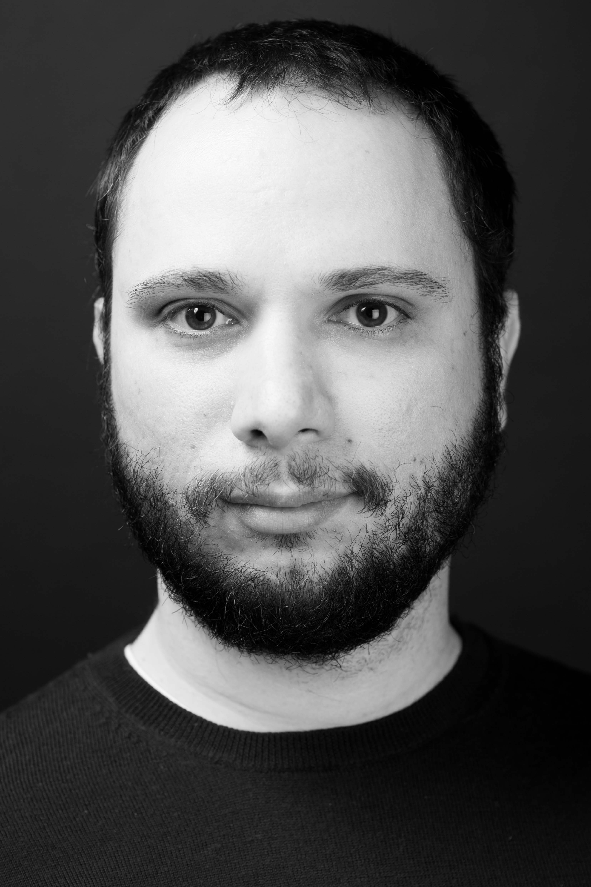

Solon P. Pissis
Senior Researcher
Networks & Optimization group | Room: M242 – Phone: +31 20 592 4263
Centrum Wiskunde & Informatica (CWI)
Visiting Associate Professor
Bioinformatics group, Computer Science
Vrije Universiteit (VU)
Background
I read Computer Science at the Department of Informatics and Telecommunications of the University of Athens (2003-2007)
before completing my M.Sc in High-Performance Computing at the University of Edinburgh (2007-2008). I obtained my Ph.D in Computer Science from King's
College London (2008-2012). I also hold a Postgraduate Certificate in Academic Practice in Higher Education from King's College London (2015-2016).
I was a Research Associate in the Florida Museum of Natural History at the University of Florida and a Visiting
Scientist in the Scientific Computing group at the Heidelberg Institute for Theoretical Studies (2012-2013).
I was appointed Lecturer (2013) and then Senior Lecturer (2018) in Computer Science in the Department of Informatics at King's College London.
In 2019 I joined CWI, where I am Senior Researcher in the Networks & Optimization group leading the
Algorithms and Data Structures for Sequence Analysis team.
In 2020, I also joined the Department of Computer Science at the VU as Visiting Associate Professor.
Research
My research area is algorithms and data structures with an emphasis on processing big data.
Research topics I am interested in include algorithms and data structures on strings and graphs for pattern matching,
indexing, comparison, and finding regularities. Applications thereof I am interested in include data mining, bioinformatics,
data compression, and information retrieval. In particular, I am interested in applications when there is a very good theoretical reason.
Professional Activities
- I am a member of the editorial board of Algorithmica
and a member of the advisory board of TheoretiCS.
- I am a member of the steering committee of ESA
and ALENEX.
- I am co-chairing (with Neerja Mhaskar and Ricardo Baeza-Yates) the programme committee of SPIRE 2026.
I am a member of the programme committee of
ESA 2026 (Track S) and
LATIN 2026.
- I organized ALGO 2023, the premier European event on algorithms, at CWI in Amsterdam.
- I was on the programme committee of
CPM 2025, WABI 2025, SPIRE 2025, PSC 2025,
ALENEX 2024 (co-chair), WABI 2024 (co-chair),
PSC 2023 (co-chair), WABI 2023,
ISAAC 2022, SPIRE 2022, WABI 2022, CPM 2022, CiE 2022,
SPIRE 2021, WABI 2021, ALENEX 2021, SOFSEM 2021, WALCOM 2021,
CPM 2020, FUN 2020, ECCB 2020, WABI 2020, SPIRE 2020, WALCOM 2020,
CPM 2019 (co-chair), SPIRE 2019, IWOCA 2019,
WABI 2018, WALCOM 2018, IWOCA 2018,
SEA 2017 (co-chair), IWOCA 2017, SPIRE 2017,
CPM 2016, IWOCA 2016,
SPIRE 2015, IWOCA 2015,
IWOCA 2014,
IWOCA 2013.
Teaching at the VU
Ph.D Supervision
Latest Research Outputs
- Solon P. Pissis: Maximal Palindromes in MPC: Simple and Optimal. SOSA 2026 [arXiv]
- Solon P. Pissis: Text Indexing and Pattern Matching with Ephemeral Edits. SOSA 2026 [arXiv]
- Ling Li, Daniel Gibney, Sharma V. Thankachan, Solon P. Pissis, Grigorios Loukides: Contextual Pattern Mining and Counting.
ICDE 2026 [arXiv]
- Pengxin Bian, Panagiotis Charalampopoulos, Lorraine Ayad, Manal Mohamed, Solon P. Pissis, Grigorios Loukides: Resilient Pattern Mining. ICDM 2025 [arXiv]
- Pengxin Bian, George Theodorakopoulos, Solon P. Pissis, Grigorios Loukides: Optimal String Sanitization Against Strategic Attackers. IEEE Transactions on Information Forensics and Security (2025) [doi]
A fairly complete list is at DBLP. The complete list can be found in my CV [pdf].
Solon P. Pissis CWI Disclaimer
Last modification: Feb 2025